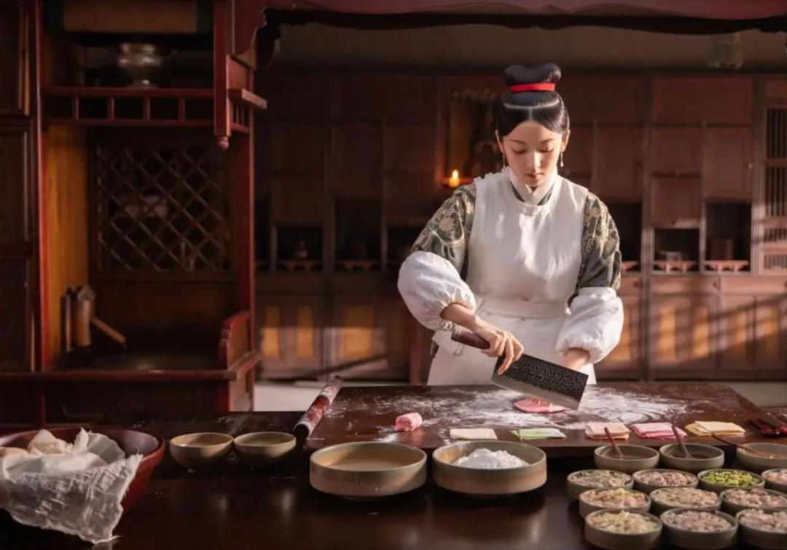
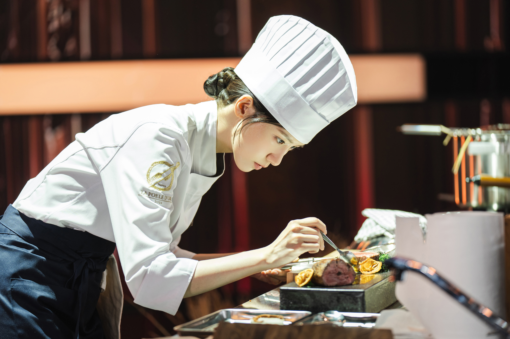
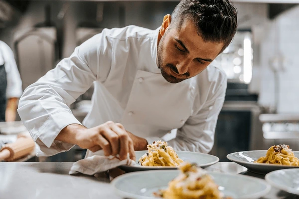

Drag and Drop Website Builder从画布到餐盘，创意的温度相通
在早期，厨师的角色只是“烹饪食物的人”，
重点是填饱肚子与味道好不好吃。
随着时代发展与社会需求变化，厨师逐渐成为“体验的设计者”。他们不只做饭，更在创造情感、氛围与记忆。
19世纪：厨师注重技艺与味道。
20世纪：开始重视摆盘与餐厅体验。
21世纪：融合科技、美学与文化，进入「食物艺术」时代。今天的厨师，和设计师一样，是在用自己的方式设计生活。

过去的厨师传承传统食谱；
而现代厨师则像设计师一样——敢于创新、不断实验。
他们思考的问题不只是“这道菜好不好吃”，
更是“顾客吃完之后，有没有被感动？”
从“做饭”到“设计体验”
从“味觉”到“感官整合”
从“食谱”到“创意概念”
这正是设计思维的体现：
以人为本、探索问题、迭代改进
设计师与厨师最相似的地方，就是他们都从「人」出发。
设计师理解使用者的需求、痛点与情绪；
厨师理解顾客的口味、感受与体验。
问题 → 顾客抱怨餐点太油腻、不健康。
解决方法 → 厨师调整烹饪方式与摆盘比例；
设计师则优化视觉结构、减少视觉“负担感”。
结果 → 顾客满意度提升 25%，整体体验更轻盈自然。
📍这就是「以人为本」的核心——理解使用者的感受，创造更好的体验。

无论是设计师还是厨师，都深知好作品来自反复修改。
他们都在做“试验”：
厨师反复调味、测试火候；
设计师反复调整色彩、版面比例。
问题 → 新菜品口味单一、反应冷淡。
解决方法 → 厨师收集顾客反馈，调整甜度与酸度。
结果 → 顾客满意率从 70% 提升至 90%。
在设计领域，这就像改图、调字体、再版面。
每一次微调，都是离完美更近一步。

真正的设计，不只是让东西“好看”；
真正的料理，也不只是“好吃”。
他们都在创造一场体验。
设计师用视觉叙事，营造情绪流动；
厨师用香气、色彩、味道讲故事。
问题 → 顾客觉得餐厅体验普通、无特色。
解决方法 → 厨师设计主题菜单与灯光氛围；
设计师设计统一品牌视觉与空间感受。
结果 → 社交媒体分享率提升 40%，品牌形象更鲜明。
🎯 无论是图像还是味道，他们都在用创意打动人心。
Drag and Drop Website Builder